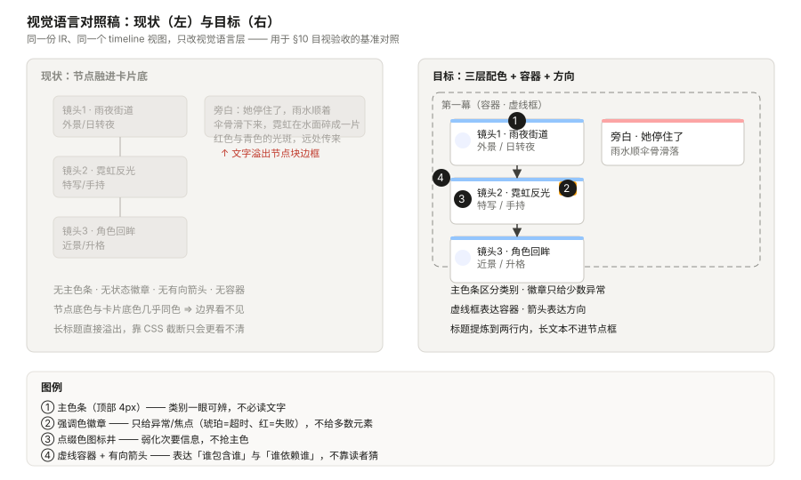

状态：待评审（brainstorming 产出，2026-10-08）
作者：WorkBuddy × sev7n4
输入：docs/superpowers/canvas_rend_view-conversation.md（用户原始意图的第一手记录，1304 行）
取代：2026-10-08-graph-expression-engine-design.md（v1，PR #276，525 行）
相关：docs/ops/graph-observation-baseline-2026-10-08.md（D1 生产基线，本版全部数据的出处）
⭐ 本版的论点：从「让它更常被用」转向「让它一次就画好」。 v1 写于观测数据之前，默认瓶颈是「模型不会用」，于是把触发判据排在第二。 D1 的生产数据推翻了这个默认：触发率并不低（用户口径 36%–57%），低的是需求基数（1.2%）。 而用户亲自反馈的痛点是「表达力弱」—— 那是单次质量，不是覆盖率。 因此本版把质量（IR → 布局 → 文字提炼 → 视觉语言）提到最前，触发与来源扩展后置。
| # | 修订 |
|---|---|
| 1 | 正交维度从 3 个变 4 个：新增视觉语言层（v1 完全没有，是用户 14:58 反馈的直接产物） |
| 2 | 交付顺序重排：IR → 质量 → 呈现 → 触发/来源，v1 的「触发优先」被数据推翻 |
| 3 | source=knowledge 的真正阻塞不是缺 source 参数，而是缺关系声明通道（15 个参数里 6 个按画布 id 索引） |
| 4 | v1 的 D1 观测方案依赖 text_delta——实测它从不落库，历史回溯只能取 user content |
| 5 | v1 §7 的 L1 / L6 / L7 已由 D1 给出答案（本版直接引用，不再列为待验证） |
| 编号 | 形式 | 内容 | 位置 | 用途 |
|---|---|---|---|---|
| 图 1 | 内嵌 Mermaid | 四个正交维度 | §4.1 | 判据：任一维度的改动不得推导其他维度 |
| 图 2 | 内嵌 Mermaid | 端到端数据流与三道质量关卡 | §5 | 定位每道关卡各自的可测点 |
| 图 3 | SVG 附件 assets/graph-expression-engine-v2-3-visual-language.svg | 视觉语言对照稿（现状 vs 目标） | §4.2 | §10 目视验收的基准对照 |
| 图 4 | 内嵌 Mermaid | knowledge 来源的阻塞与最小通道 | §4.4 | 防止「半个替代品」上线 |
| 图 5 | 内嵌 Mermaid | 交付顺序与硬依赖 | §6 | 排期门禁：D2 未完不得进 D3 |
| 图 6 | 内嵌 Mermaid | 观测闭环 | §10 | 上线后用数据验收，不用感觉验收 |
| # | 目标 | 成功判据（可观测 / 可断言） |
|---|---|---|
| G1 | 单次表达质量达标 —— 画出来的那一次就看得清、看得懂、有重点 | 目视：与 图 3 右侧一致（三层配色、虚线容器、有向箭头、无文字溢出）；断言：节点 label 在 168px × 2 行内完整显示 |
| G2 | 来源 × 视图 × 视觉语言正交 —— 领域知识、画布事实、混合三类来源共用同一套视图与视觉语言 | 空画布 + source=knowledge + 模型自供实体 ⇒ 必须出图（意图 1 的硬判据） |
| G3 | 图可嵌入画布继续创作 —— 落地为结构化节点组，不是位图 | 嵌入后节点可编辑、agent 可读懂（位图不可：agent 无法理解一块像素） |
⚠️ v1 的 G1–G6 里有一条仍然成立且本版继续主张：G6「模型用对了没有」必须由数据回答，不能假设。
它的前提 D1 已交付（PR #285），因此本版把它从「遗留」移进 §10 的观测闭环。
| 编号 | 内容 | 对应用户意图 |
|---|---|---|
| D2 | IR 抽取：把布局算法从渲染里剥离，legacy 别名在 IR 入口归一 | 全部三条 |
| D3 | 表达质量：布局紧凑化 + 文字提炼 + 视觉语言规范 | 图看得清（14:58 反馈） |
| D4 | 呈现分工（静态 / 可交互）+ 嵌入画布为结构化节点组 | 意图 3「嵌入协同创作」 |
| D5 | 触发判据对齐 + source=knowledge / mixed 来源扩展 | 意图 1 / 意图 2 |
| # | 不做 | 理由 |
|---|---|---|
| N1 | 不做图表库（饼图 / 柱状图 / 折线图） | 那是「数据可视化」不是「关系表达」，另开能力 |
| N2 | 不做通用流程图编辑器 | 本工具产出是只读投影；可编辑画布是另一条链 |
| N3 | 不做拖拽创建节点 | 越界。创建节点是 upsert_media_node 的职责 |
| N4 | 不追求「一张图表达所有东西」 | 视图选择本身就是减法；强塞会退化成看不清 |
| N5 | 不新增顶层参数（唯一例外：edges，理由见 §4.5） | 现有 15 个已超出模型可靠选择的能力边界 |
| N6 | 不为覆盖所有场景而自动选视图 | 选不出来时如实说不确定，比乱选好 |
| N7 | 不在本规格解决缩略图取图链路 | 只声明依赖（需一条带鉴权的取图接口） |
| N8 | ⛔ 不用 CSS 截断代替内容提炼 | 「字太多」是内容问题。夹紧只是把溢出变成省略号，用户看到的仍是没提炼 |
| # | v1 的说法 | v2 修订 | 依据 |
|---|---|---|---|
| 1 | 三个正交维度（来源 / 视图 / 呈现） | 四个：新增视觉语言层 | 用户 14:58 反馈「颜色对比不够、没有 PPT 感、文字溢出」——这三点都不在 v1 的任何维度里 |
| 2 | D1 → D2 触发 → D3 IR → D4 能力 → D5 渲染 | D1 ✅ → D2 IR → D3 质量 → D4 呈现 → D5 触发/来源 | D1 基线：用户口径触发率 36.4%（全量）/ 57.1%（30 天），不低；需求基数 1.2% |
| 3 | 加 source 参数即落地 knowledge | 不够。真正阻塞是无关系声明通道 | 实测：nodes 只是 {node_id, color} 样式覆盖；node_ids / focus / annotations[].node_id / overlay.data[].node_id 4 个直接按画布 id 索引，另有 hops 依赖 focus |
| 4 | D1 观测点含 text_delta | ⛔ text_delta 从不落库，改为取 user 行 content | 实测 agent.service.ts 只在 tool_call / tool_result / canvas_command / canvas_action / thinking / turn_usage / task_* 时 push |
| 5 | L1 / L6 / L7 列为待验证 | 已由 D1 回答，直接引用 | 基线快照 §三 |
PR #282 已在 neowow-tokens.css 与 AgentNodeGraph.vue 上做了第一轮视觉修复（三层配色、防溢出、箭头虚框）。
⭐ 本版把 #282 的成果提升为规范（§4.2），并要求它在 IR 之上实现，而不是在「画布透传」之上——
否则布局紧凑化（D3）落地时视觉层要重写一遍。
见 图 1。
| 维度 | 决定什么 | 谁决定 |
|---|---|---|
| 来源 | 画什么（有哪些实体、什么关系） | 问句 + 画布是否有相关节点 |
| 视图 | 怎么排（关系 / 时序 / 层级 / 阶段交叉 / 分布） | 问句的形状，与来源无关 |
| 视觉语言 | 怎么看得清（主色 / 强调色 / 点缀色 / 容器 / 方向 / 对比度） | 规范（本 §4.2），不由模型选 |
| 呈现 | 静态 SVG 还是可交互节点图 | 节点数 + 是否需要 overlay（§4.6） |
⭐ 关键：视觉语言是规范层，不是参数层。它绝不能变成第 16 个参数让模型去选——
这正是 v1「不加参数」判据的延伸，也是「模型选不准」担忧的直接缓解。
*图 1 · 四个维度互不推导：换来源不换视图、换视图不换视觉语言、换视觉语言不换呈现。IR 是唯一真相源 ⇒ 任一维度的改动都收敛到一处。*
见 图 3。这是用户 14:58 反馈的直接落地，四条硬判据：
（1）三层配色（PPT 式分工，各层职责不重叠）
| 层 | 承载什么 | 落点 | 取色规则 |
|---|---|---|---|
| 主色 | 「这是什么类别」 | 节点顶部 4px 色条 + 图例 | 浅色主题 500–600 档；深色主题 200 档（深底上可读性最高） |
| 强调色 | 「这里需要你注意」 | 状态徽章（琥珀=超时/进行中，红=失败/阻塞）+ 选中描边 | ⛔ 单图中强调色元素 ≤ 总数的 20% —— 超过等于没有强调 |
| 点缀色 | 「次要但要有位置」 | 图标井底色 | 主色的低透明度底，不得抢主色 |
（2）容器与方向
relation=dependency）必须带箭头；无向（relation=category）不得带箭头。view + relation 决定，⛔ 禁止渲染层自行决定是否加箭头。（3）对比度（硬判据）
#ffffff 节点 / 深色 #2a2a33 节点（比卡片亮一档）。（4）文字提炼（内容规则，不是样式规则）
这是「字太多、文字溢出节点块」的真正解法：
label 必须能在 168px 宽 × 2 行内完整显示 ⇒ 由 IR 构建侧保证，不是渲染侧截断。label ≤ 12 个汉字或 24 个拉丁字符（可断言的纯函数，见 §8）。description（hover / 详情 / 导出 HTML），⛔ 绝不进节点框。*图 3 · 同一份 IR、同一个 timeline 视图，只改视觉语言层。左侧是现状（节点融进卡片底色、无方向、文字溢出），右侧是本版目标。用于 §10 目视验收：上线后截图与右侧对照。*

见 图 4。
事实核查（2026-10-08，核对 render-canvas-view.ts）：现有 15 个参数中，4 个直接按画布节点 id 索引，
另有 hops 依赖 focus：
node_ids[] "Source node ids; omitted means all canvas nodes"
focus "Must be an existing node id"
nodes[].node_id "Canvas node id this styling applies to"
annotations[].node_id "Annotated node id"
overlay.data[].node_id "node_id omitted means positional against the canvas nodes"
hops 依赖 focus，非直接索引⚠️ 因此：只加 source=knowledge 而不给「实体声明通道」，等于让这 6 个参数在 knowledge 模式下全部失效。
这正是记忆里的铁律命中场景 ——「半个替代品 = 幻觉源」：模型会填 source=knowledge 却无处填实体，
产出空图或假图，而没有任何东西会报错。
*图 4 · knowledge 来源的最小充分集是三件事，缺一即不可上线。第三件（失效参数显式报错）是防止静默降级的关键。*
最小充分集（三件，缺一不可）：
nodes[] 从「样式覆盖」扩展为「实体声明」：node_id 变可选；无 node_id 时 label 必填（模型自造实体）。⭐ 这样复用现有参数，不新增顶层参数。
edges 参数 —— 本版唯一新增，理由：现有 15 个参数里没有任何关系声明通道，不可替代（§4.5）。focus / hops / node_ids / annotations / overlay.data 必须显式报错，⛔ 不得静默忽略。沿用 v1 判据并提高门槛：新增任何参数前，必须证明它不可替代。
| 步骤 | 问题 | 本版结论 |
|---|---|---|
| 1 | 能否用现有 15 个参数的组合表达？ | 能 ⇒ 不加 |
| 2 | 不能 ⇒ 能否扩展现有参数的取值域表达？ | 能 ⇒ 扩（如 nodes[] 扩为实体声明） |
| 3 | 都不能 ⇒ 才允许新增顶层参数 | 本版仅 edges 一例 |
⭐ 删除优先于新增：D1 已给出删除候选 show_type（生产使用 2 次）、focus_anchor（1 次）。
删掉一个从没被用过的参数，比新增任何参数都更能改善模型选择准确性，且零成本。
| 情况 | 选谁 |
|---|---|
| 需要 overlay（情绪 / 预算 / 严重度） | 静态图 |
| 节点数 > 15 | 静态图 |
| 用户说「打开看看 / 点进去」 | 可交互节点图 |
| 默认 | 静态图 |
⭐ 本版补充：无论选哪种呈现，都共用同一套视觉语言（§4.2）。
⛔ 不允许静态图是一套配色、节点图是另一套——那正是历史上「两套逻辑必然漂移」的复发。
见 图 2。
*图 2 · 从问句到呈现的八个阶段，其中三道质量关卡各自有可断言的纯函数（§8）。关卡的意义：质量问题是内容问题，必须在关卡内解决，不能推给渲染层。*
在 v1 的 IR 上补三处（其余不变：nodes / edges / view / title / overlays）：
interface GraphIRNode {
id: string;
type: 'entity' | 'step' | 'group' | 'milestone' | 'category';
/** ⭐ 提炼后的短标签，必须满足 168px × 2 行的预算（§4.2-4）。 */
label: string;
/** 完整文本。⛔ 不进节点框，只进 hover / 详情 / 导出。 */
description?: string;
/** 来源标识：canvas 有缩略图位，knowledge 没有。 */
sourceKind?: 'canvas' | 'knowledge' | 'derived';
/** knowledge 来源的语义标注（与 dim 互斥）。 */
concept?: { category?: string; definition?: string };
/** 语义标注（情绪强度 / 超时 / 严重度）→ 映射为强调色。 */
mark?: { kind: string; level: number; text?: string };
dim?: Record<string, string>;
canvasNodeId?: string;
}
interface GraphIREdge {
source: string;
target: string;
kind: 'sequence' | 'dependency' | 'containment' | 'flow';
label?: string;
}⚠️ IR 仍然不含坐标（沿用 v1）：坐标是布局阶段的产物，换视图不动 IR。
⭐ 本版新增的 label / description 分离，是「文字提炼」能成为可断言纯函数的前提。
五个视图算法（buildLayoutSvg / buildTreeSvg / buildTimelineFlowSvg / buildSwimlaneSvg / buildMatrixSvg）
从「直接吐 SVG 字符串」改为「吐坐标」，渲染降级为纯消费。
topology / table 在 IR 构建之前就归一（resolveView）⇒ IR 的 view 字段不含 legacy 值。topology 32 次、table 40 次 ⇒ 本轮不得废弃这两个别名。IR → 视觉角色的映射是纯函数（visualRole），不含样式字符串：
| IR 信号 | 视觉角色 | 落点 |
|---|---|---|
node.type | 主色 | 顶部 4px 色条 + 图例 |
node.mark.level 超阈 / severity=warn | 强调色 | 状态徽章（≤ 总数 20%） |
| 其他 | 点缀色 | 图标井底色 |
edge.kind=dependency | 有向 | 带箭头 |
edge.kind=category | 无向 | 不带箭头 |
| 分组 / 阶段容器 | 虚线框 | stroke-dasharray |
见 图 5。
*图 5 · 顺序即优先级，箭头是硬依赖。D2 未完成不得进 D3（IR 是地基）；D5 的前置是需求侧证据，而不是 D4 完成。*
产出：pi_runtime_graph_* 指标族 + 查询脚本 + 生产基线快照。
本版全部数据来自它（见 §7）。
label / description 分离；| 编号 | 内容 | 对应判据 |
|---|---|---|
| D3-1 | 布局紧凑化 —— 坐标紧凑排布，消灭「vast 空里几个小点」 | 26 节点时包围盒面积显著小于透传 |
| D3-2 | 文字提炼 —— condenseLabel 在构建侧保证预算 | 168px × 2 行内完整显示 |
| D3-3 | 视觉语言规范落地 —— 三层配色 + 虚框 + 箭头 + 对比度 | 与 图 3 右侧一致 |
⭐ 为什么 D3 排在触发之前：D1 数据显示用户口径触发率 36.4%（全量）/ 57.1%（近 30 天），
「模型不会用」不是主要矛盾；而用户亲自反馈的痛点是「表达力弱」。
漏掉的 43%–64% 确实存在，但绝对量是每月 6–14 条量级 ⇒ 修触发规则的收益上限很小。
source=knowledge / mixed 按 §4.3 的最小充分集落地；在这个基数上扩能力的收益未被证明 ⇒ 可后置，直到出现需求侧证据。
本版全部决策数据的出处（docs/ops/graph-observation-baseline-2026-10-08.md，生产库全量 1806 轮 / 近 30 天 856 轮）：
| 指标 | 全量 | 近 30 天 |
|---|---|---|
| 轮次 | 1806 | 856 |
真调过 render_canvas_view | 46（2.5%） | — |
| 用户明确要图的轮次 | 22（1.2%） | 14（1.6%） |
| 触发率（用户口径） | 36.4% | 57.1% |
本版新增测算（口径见 §10.3）：按「问句形状适合图形化」放宽（不要求用户说出「图」字），
候选池 53 轮（2.9%），其中真画 13 轮 ⇒ 24.5%。
⇒ 即便放宽口径，适用场景仍在 3% 量级，这支撑了「质量优先于覆盖率」的排序。
⚠️ 头号发现（必须写进任何后续规则）：裸「图」在本产品线是反信号 ——
宽松词表 749 命中 / 19 真画（2.5%），严格词表 16 / 8（50%），差 20 倍。
原因是本产品是生图平台，用户嘴里的「图」绝大多数指「生成一张图片」。
遗留问题的答案（v1 的 L1 / L6 / L7，本版不再列为待验证）：
| # | 问题 | 答案 |
|---|---|---|
| L1 | 「该画没画」的发生率 | 用户口径下 43% 没画；绝对量每月 6–14 条 |
| L6 | 哪些参数该删 | show_type 2 次、focus_anchor 1 次 ⇒ 删除候选 |
| L7 | legacy 别名是否还在用 | topology 32 次、table 40 次 ⇒ 本轮不得废弃 |
| 函数 | 输入 → 输出 | 必须覆盖的用例 |
|---|---|---|
resolveView(view) | legacy → 规范视图 | topology 与 layout+dependency 产出同一 IR（v1 Review Focus #4） |
condenseLabel(label, budget) | 长文本 → 短标签 | 中文 12 字边界、拉丁 24 字符边界、含标点、空串 |
layoutCompact(ir, view) | IR → 坐标 | 26 节点时包围盒面积显著小于透传；单节点不除零 |
visualRole(node) | IR 节点 → 视觉角色 | 强调色元素占比 ≤ 20%；mark 缺失时回落点缀色 |
toCanvasNodeGroup(ir) | IR → 结构化节点组 | 产物含可编辑节点而非位图；标题含 <script> 被转义 |
⭐ 项目硬纪律：每个纯函数至少做一次变异验证（人为改坏实现，确认对应用例转红），
并在提交信息里写明「改了什么 → 哪条变红 → 还原后复绿」。本条与 D1 的六处接线变异一致。
| 文件 | 改动 | 阶段 |
|---|---|---|
services/pi-runtime/src/graph/graph-ir.ts（新增） | IR 类型 + resolveView + condenseLabel | D2 |
services/pi-runtime/src/graph/layout/*.ts（新增） | 五视图「IR → 坐标」+ layoutCompact | D2 / D3 |
services/pi-runtime/src/tools/render-canvas-view.views.ts | 5 个 build*Svg 改为算坐标 | D2 |
services/pi-runtime/src/tools/render-canvas-view.ts | nodes[] 扩为实体声明；新增 edges；knowledge 模式显式报错 | D5 |
apps/web/src/components/agent/presentation/AgentNodeGraph.vue | 消费 IR + 视觉语言角色 | D3 / D4 |
apps/web/src/styles/neowow-tokens.css | 视觉语言变量（承接 #282） | D3 |
prompt-registry/ 触发规则 | 可判定信号（承接 D1「裸图是反信号」） | D5 |
上线后在深浅两种主题下各截一张，与 图 3 右侧对照：三层配色分明、容器是虚框、
有向边有箭头、节点文字无溢出、节点与卡片底色可区分。
condenseLabel 与 visualRole 单测 + 变异验证；& 必须第一个处理，否则 < 被二次转义）；source=knowledge + 模型自供实体 ⇒ 必须出图（G2 硬判据）。见 图 6。D1 已交付指标，后续每项改动都与其对比，不用感觉验收。
*图 6 · 上线后按周取数，与基线对比；任一指标反向变化即触发复查，而不是等用户反馈。*
本版新增测算的口径声明：§7 的「问句形状池」用关键词近似（关系 / 结构 / 流程 / 顺序 / 阶段 / 对比 / 分布 / 依赖 …），
并排除了命中生图词的轮次。它会漏掉「这几镜之间什么关系」这类无关键词的诉求 ⇒ 只能作为上界参考，
真值以 runtime 上线后的 pi_runtime_graph_* 指标为准。
| 风险 | 影响 | 缓解 |
|---|---|---|
| 需求基数仅 1.2%，D5 可能白做 | 投入产出比低 | D5 的前置是需求侧证据（图 5），不是 D4 完成 |
| D2 纯重构破坏现有行为 | 用户可见回归 | 验收判据是「对外输出逐字节不变」+ 快照测试 |
| 视觉语言是主观的 | 评审反复 | 图 3 作目视基准；深浅两主题各一版；不在评审里用形容词争论 |
| knowledge 模式的失效参数被静默忽略 | 模型产出假图且无报错 | §4.3 第三件：必须显式报错 + 单测锁住 |
| 缩略图取图链路未通 | 视觉资产画布上只有类型图标 | N7：本规格只声明依赖，不解决 |
| 文字提炼压掉关键信息 | 图变清楚了但没信息 | description 保留全文，hover / 详情 / 导出可见 |
| 项 | 何时 |
|---|---|
| 缩略图取图链路（带鉴权） | D4 之后单独一包 |
删除 show_type / focus_anchor（L6 候选） | D2 完成后，与 IR 一起做 |
source=knowledge 的需求侧取证 | D5 的前置 |
| SVG 静态图路径的存废 | D4 上线后用呈现分布数据决定，不在本规格下结论 |
| 导出独立 HTML（快照分享） | 依赖取图链路 |
pnpm verify-spec-figures --file docs/superpowers/specs/2026-10-08-graph-expression-engine-design-v2.md结果：见本包提交信息（要求 0 错误；R4 / R8 为警告级，需确认无遗漏引用）。